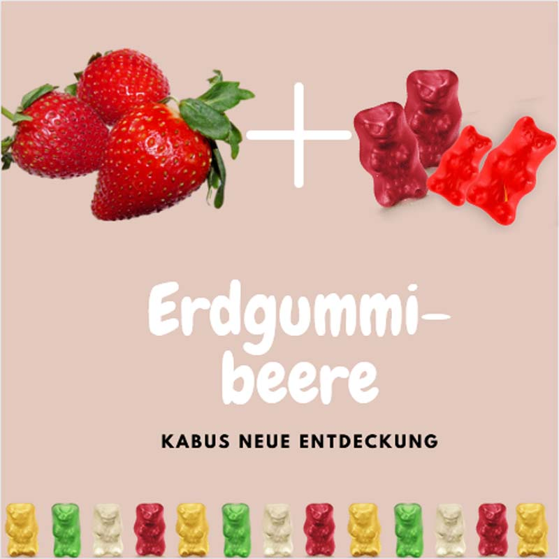

Hinweis: Dieser Beitrag wurde am 01. April veröffentlicht
Erdgummibeere
Achtung, Achtung – heute schon genascht? Soeben hat KABU eine neue Nachricht erhalten.
Hast du schon von der neuen Frucht gehört? Es ist eine Kreuzung aus Gummibären und Erdbeeren – die Erdgummibeere! Für die Anpflanzung wurden nur rote Gummibären verwendet, die der Frucht den typisch süßen Geschmack verleihen. Rein äußerlich ist die Frucht kaum von einer normalen Erdbeere zu unterscheiden.
Klingt das nicht absolut lecker? KABU findet, dass ist die beste Frucht, die er sich vorstellen kann. Da die Frucht nicht in Deutschland beheimatet ist, ist diese leider noch nicht in den heimischen Supermärkten zu finden. Hoffentlich ändert sich das bald!

Du glaubst uns nicht? Richtig – April, April! Das ist natürlich nur ein Aprilscherz und wir haben versucht, dich in den April zu schicken. Aber weißt du eigentlich, warum am 1. April so viele Scherze gemacht werden?
Der Ursprung der Aprilscherze ist nicht ganz bekannt. Es gibt viele unterschiedliche Erklärungen für die Entstehung dieser Tradition. Eine dieser Erklärungen ist auf das wechselhafte Wetter im April zurückzuführen, dass uns sozusagen an der Nase herumführt. Nicht umsonst gibt es die Redewendung „April, April, der weiß nicht, was er will“.
Heute ist der 1. April! Sei heute besonders vorsichtig!
💭 Sprechblase Heute ist der 1. April! Sei heute besonders vorsichtig!
Wichtig ist jedoch, dass du heute besonders auf der Hut bist und dir keinen Bären aufbinden lässt! Doch nicht nur im April solltest du darauf achten, dass nicht alles, was du so im Internet findest, der Wahrheit entspricht. KABU hat hierzu schon einen Beitrag über Fake News veröffentlicht. Schau dir gerne das Video an!
Hast du heute schon jemanden in den April geschickt? Wenn du einen guten Aprilscherz hast, schreibe gerne der KABU-Redaktion. Das geht ganz einfach, indem du auf den blauen Button Schreib dem KABU-Team tippst.